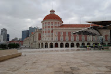

Museu da Moeda
Localidade: Luanda
Informação: é o património cultural localizado na província de Luanda, que conta a evolução da moeda de troca de Angola desde os períodos primórdios.
Localização: Av. 4 de Fevereiro 151, Luanda
Comentário: O miradouro tem uma vista incrível, e é diferente de todos os demais cânions que já vi. Você consegue ver as rochas de formato peculiar e até o mar! Lindo!
agendamento: A visita a este importante património cultural de Angola, é feita mediante ao processo de marcação, sendo que, este sistema de informação funciona de segunda a Sábado, no horário compreendido das 9h às 15h30
Características: destaca-se pelas infra-estruturas no subterrâneo, ocupando uma área bruta de construção de 95 mil metros quadrados.